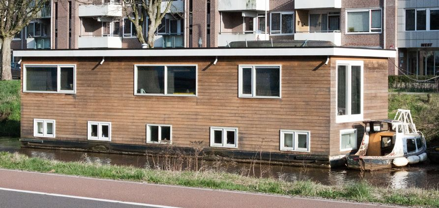
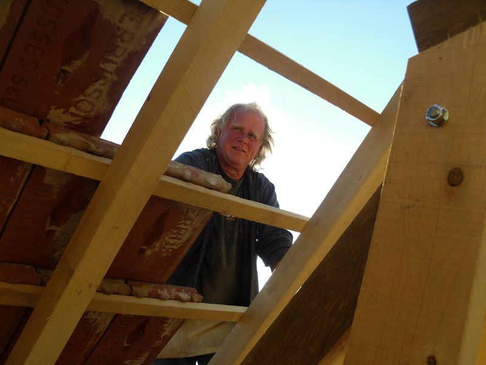
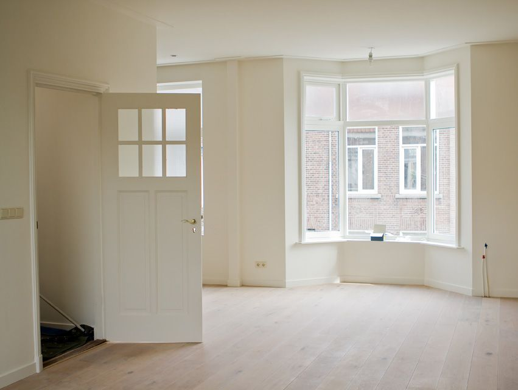

Een betrouwbaar kleinschalig aannemersbedrijf in Breda. Met een groot team freelancers hebben wij voor iedere klus de juiste man, van onderhoud tot renovaties, reparaties en meer.
Hoofdzakelijk voor particuliere klanten in en om Breda. We leveren alles altijd strak en netjes af.
De complete verbouwing van uw huis begint bij eerlijk advies en goede begeleiding. We maken samen een stappenplan dat past bij uw huis.
Extra ruimte, met aandacht voor uw tijd en budget en voor de praktische mogelijkheden en beperkingen. Uitgevoerd in metselwerk of houtskeletbouw, met lichtkoepels of een lichtstraat.
Een oude boerderij, een pand uit de jaren '20 of een ander gebouw dat de moeite waard is. Duurzamer, met minder energieverbruik en meer onderhoudsvriendelijk.
Een kozijn vernieuwen, laminaat leggen of een tochtgat dichten. Ook voor de kleinere klusjes bent u bij ons aan het juiste adres.
Een zitplek in de tuin, een tuinschuurtje, schuttingen, carports of het monteren van trespa en keralit plaatmateriaal.
Sfeervolle zolderetages met een dakkapel, gecombineerd met het isoleren en stuken van het dak.
Woonhuizen, woonboten, vakantiehuisjes, geluidsstudio's: een greep uit de projecten van WalVis.






WalVis Verbouwingen is in 1998 opgericht door Arnold van Walsum en Walter Visser. Samen bouwden ze panden om tot appartementen, bouwden geluidsstudio's en deden renovatiewerk in Frankrijk. Dat leidde tot de oprichting van WalVis.
Voor elke klus de juiste vakman.
In de loop van de tijd kregen we veel freelance hulp. We weten precies op wie we voor welke klus kunnen bouwen, en dat netwerk van vakmensen groeit nog steeds. We zijn lid van VLOK, de branchevereniging voor klusbedrijven. Het voordeel is onder andere een dekking tot 80.000 euro bij extreme schadegevallen.
We brengen eerst uw wensen in kaart en maken een vrijblijvende offerte. Advies kan ook.
076 565 94 59 06 53 85 51 60 info@walvisverbouwingen.comWalVis Verbouwingen
Baronielaan 238 A
4837 BG Breda
KvK 20096426